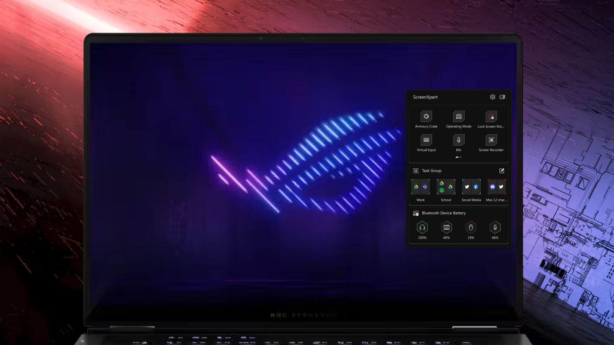
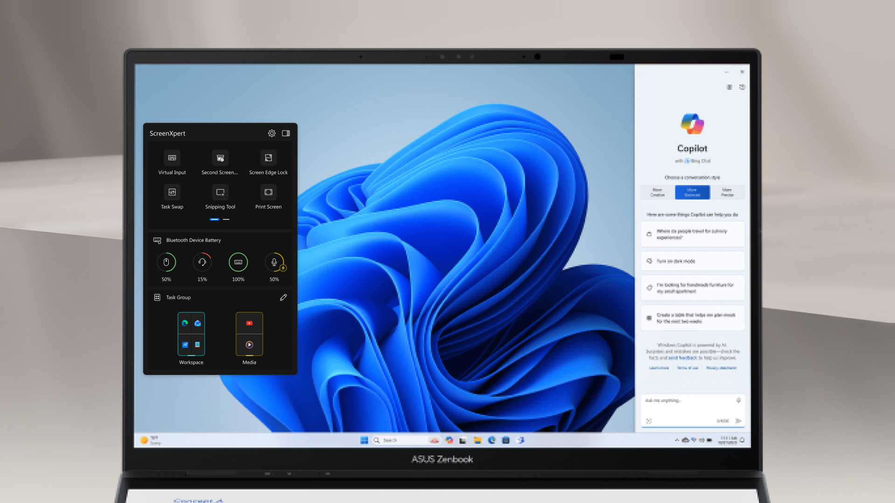
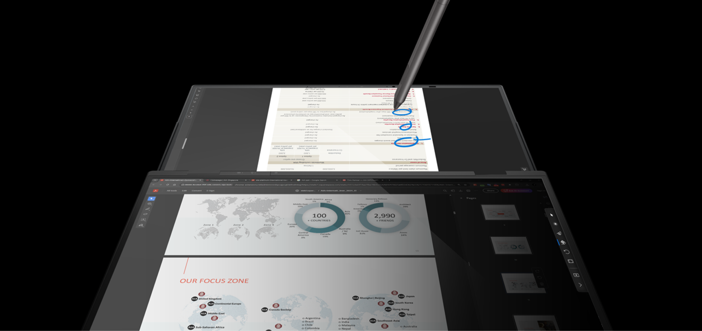
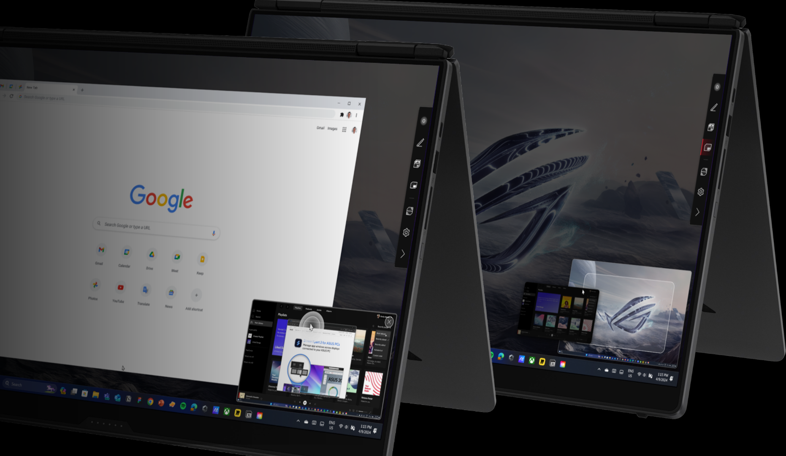
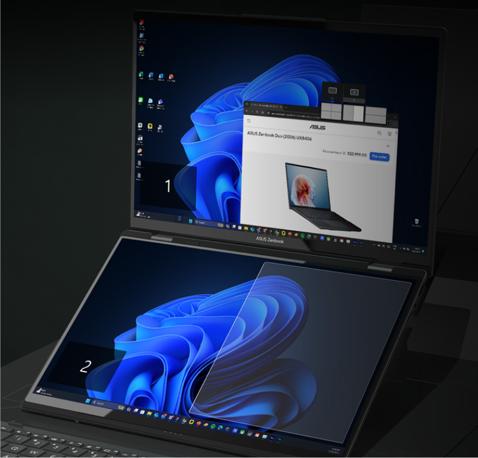
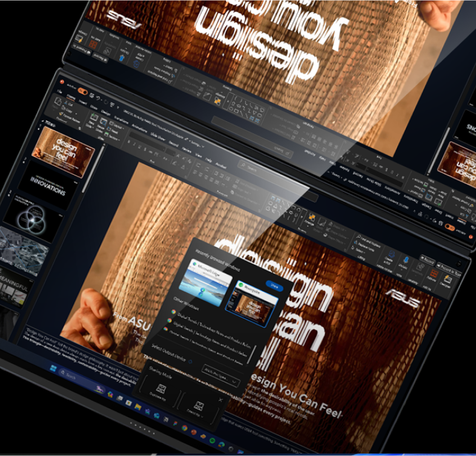
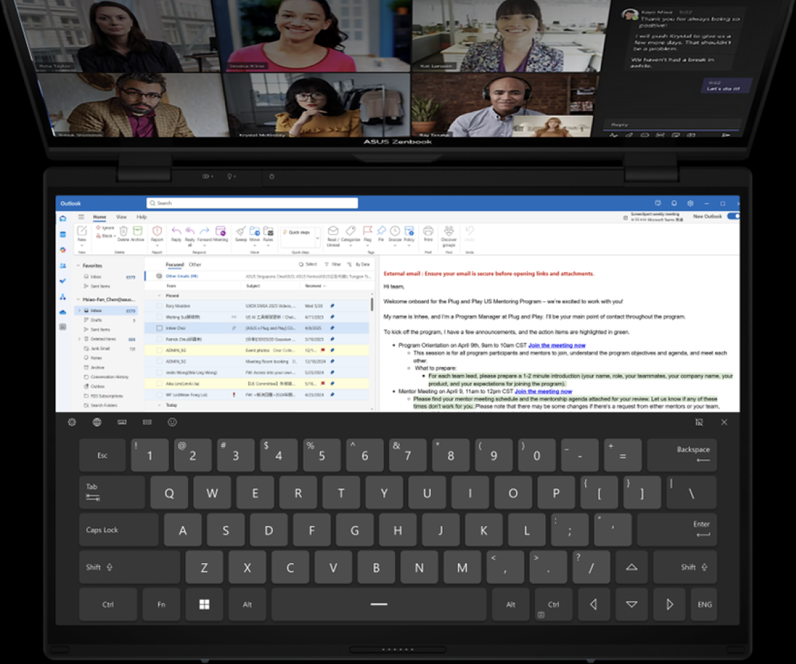
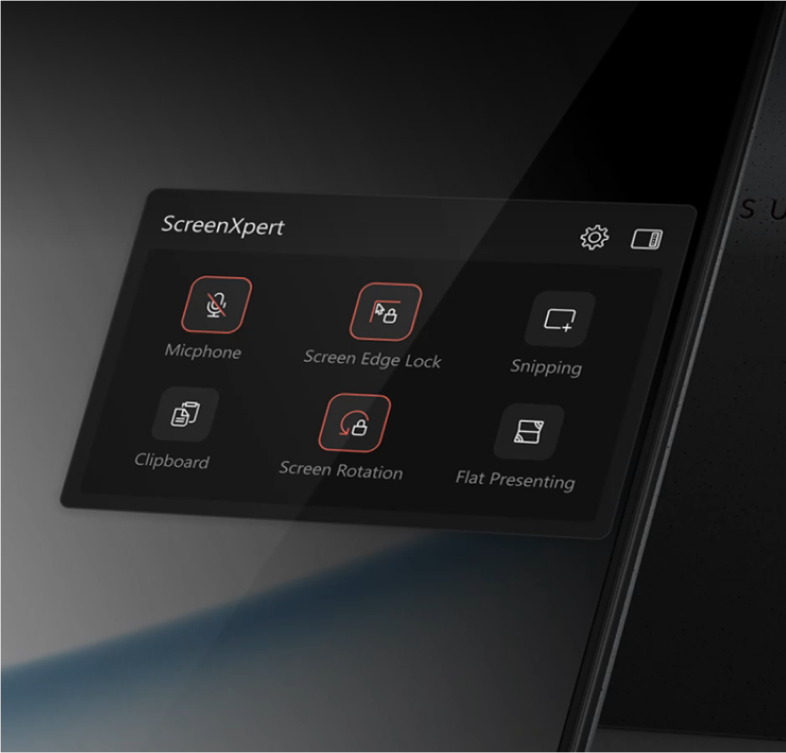

Case Study
ScreenXpert 4
Led the redesign of the next-generation ScreenXpert experience and later helped evolve its direction from a single–product solution into a scalable platform, adapting features and interaction models across ASUS, ROG, and devices.
Earlier versions ran only on dual–screen laptops. This one was opened up to every ASUS laptop, which meant rebuilding the interaction model so it held on a single screen as well as two — and a unified design system now adopted across two product lines.
The Challenge
As multi-screen devices expanded across ASUS’s portfolio, ScreenXpert needed to move beyond a one-off software experience and become a flexible system that could scale across product lines, brands, and screen sizes.
Core Challenges include:
- Supporting different user needs across productivity- and performance-focused devices
- Adapting interactions to varying screen dimensions and hardware constraints
- Ensuring feature consistency while allowing brand-specific differentiation
- Designing for future expansion beyond the initial product scope
Research and Validation
I led the research. We recruited and tested with 12 real users, mainly in the US and UK, to understand how people were actually working across two screens rather than how we assumed they were.
From those insights we moved into solutioning. Prototypes were built in Figma Make within a week — work that would previously have taken up to two months — then tested internally with 6 users as a fast proof of concept before committing to a direction.
Scaling across ASUS Zen Series and ROG Series
As ScreenXpert expanded across the Zen and ROG series, the focus shifted to scaling the experience while preserving distinct brand identities. I led the interface adaptation, maintaining a consistent core interaction framework while tailoring visual language and interaction nuances to each brand, balancing Zen’s clean, productivity focus with ROG’s more expressive, performance-driven experience.
ASUS Zenbook DUO
ASUS Standard Design Language
ROG Zephyrus DUO
ROG Design Language


Drag to compare
Leveraging on the Form Factor
The Zenbook DUO allows users to open the laptop to 180 degrees (sharing mode) to share content with others while the Zephyrus DUO is able to open to 320 degrees (tent mode) for gaming experience. Leveraging on these unique feature of the laptops, we designed features to value-add to users.





